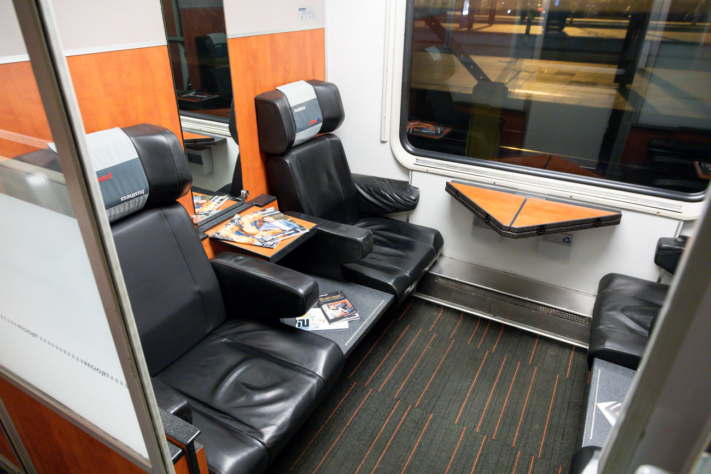

Що це за вагон
Сидячий 1 клас має меншу щільність посадки, тому між рядами більше простору для ніг та ручної поклажі. Вагон орієнтований на ділові та тривалі денні поїздки.
У салоні підтримується тиха атмосфера: гучні розмови та відео без навушників не вітаються, що робить формат зручним для пасажирів, які працюють у дорозі.
Базові зручності
- Збільшена відстань між кріслами
- Індивідуальні лампи для читання
- Розетки біля кожної групи місць
- Сервісна вода та інформаційні матеріали в дорозі
Кому підійде
Пасажирам, які регулярно подорожують у справах, цінують особистий простір та хочуть мати комфортні умови для роботи з ноутбуком під час поїздки.
← Повернутися до типів вагонів